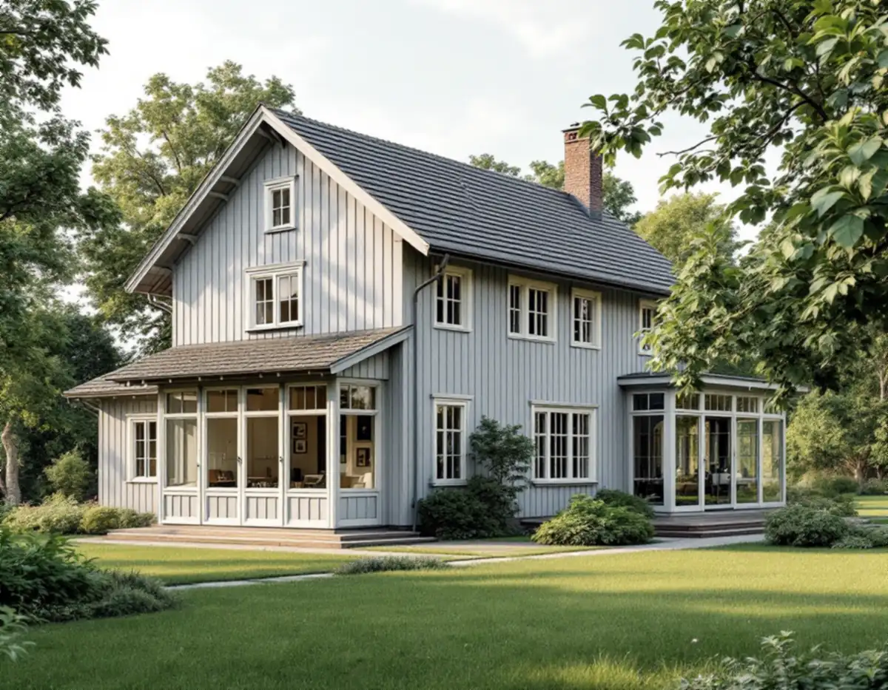
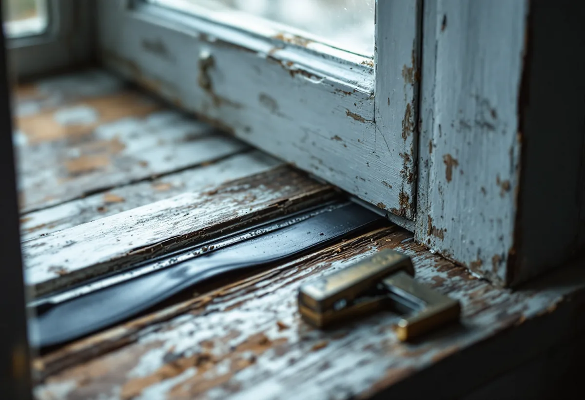
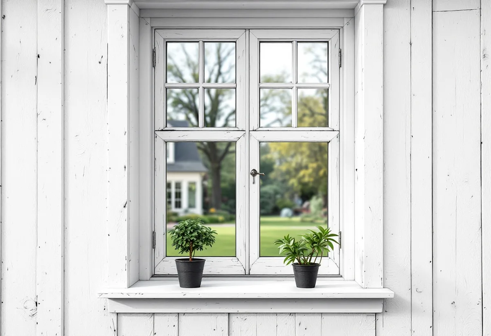

Besiktning
Varje fönster gås igenom: virke, kitt, färg, beslag och täthet.
Villorna i Solhem och de andra villastäderna i Spånga har ofta kvar sina ursprungliga fönster, och de går i regel att göra täta igen utan att bytas. Geal Entreprenad AB renoverar fönster i villor i Solhem, Bromsten, Flysta och Sundby och behåller fönstrens mått och utseende.

Stadens strategi för småhusområden räknar Solhem, Bromsten, Flysta och Sundby till villastäderna. I Solhem fanns från början stora tomter där bara en tiondel fick bebyggas, och i strategins tabell är Solhem markerat som kulturhistoriskt värdefull miljö.
Stadsmuseets inventering av Älvsjö villastad berättar att bolaget AB Hem på landet ofta använde ritningar som tidigare använts i andra villastäder som bolaget exploaterade, till exempel Solhem. Villorna i de två villastäderna kan alltså ha gemensamma förlagor.

Stockholms stad räknar upp vilka fönsterändringar som kan kräva bygglov: att byta material eller kulör, ändra storlek, dimensioner, proportioner eller profiler på karmar, bågar och spröjsar, byta upphängning, till exempel från sidohängda fönster till vippfönster, och ändra indelningen genom att lägga till spröjs eller ta bort mittpost.
Det är bygglovsenheten som bedömer utifrån den ändring som föreslås om den kräver lov för just den byggnaden, skriver staden. Staden påpekar att byggnaden kan ha karaktäristiska fönster eller tidstypisk fönsterindelning, där en ändring påverkar både fasaden och husets karaktär. I Solhem, som är kulturhistoriskt värdefull miljö, gäller utökad lovplikt. En renovering som behåller mått, profiler, indelning och kulör är däremot underhåll.
Riksantikvarieämbetet skriver att de två vanligaste skälen till att byta gamla fönster är att värme- och ljudisoleringen ska bli bättre, men att det finns billigare lösningar. Dagens tätningslister av gummi passar gamla fönster väl och ger en avsevärd förbättring. Svarta och bruna lister är av EPDM-gummi, vita av silikongummi.
Det är innerbågen som ska tätas, inte ytterbågen, och fönstret ska vara målat och justerat innan listerna sätts. En för tjock list gör fönstret svårstängt och kan skada båge och glas, så vi mäter springan innan vi väljer list.
En tillsatsruta är ett extra glas i en profil som fästs på innerbågen, och enligt Riksantikvarieämbetet ger gummilisterna ett lufttätt utrymme där glasen inte behöver tvättas. Vill du behålla de profiler som finns på det befintliga fönstret är en extra träbåge på insidan oftast den bästa lösningen.
Med rätt tätningslist och tillsatsruta blir ett gammalt fönster enligt Riksantikvarieämbetet lika energisnålt som ett nytt. Om villastädernas hus i övrigt kan du läsa under totalrenovering i Spånga.
Det är framför allt bottenstyckena i karm och båge som drabbas av större skador, skriver Riksantikvarieämbetet, och oftast går det att byta bara de skadade partierna. För karmbottenstycken räcker det i allmänhet att limma in nytt virke i den yttersta, mest utsatta delen.
Virket som används vid reparation bör enligt Riksantikvarieämbetet likna och kunna samverka med det som använts tidigare. Riksantikvarieämbetet anger bland annat hög kärnvedsandel, högt kådinnehåll, täta årsringar och kärnsidan vänd utåt.
Utan besiktning är det lätt att döma ut fönster som går att bevara, påpekar Riksantikvarieämbetet. Därför börjar vi med att gå igenom varje fönster för sig. Om fönsterbyte i stort kan du läsa under fönsterbyte.

Varje fönster gås igenom: virke, kitt, färg, beslag och täthet.
Renovering, tätning och eventuell innerbåge står var för sig.
Skadade bottenstycken och delar av bågar byts med nytt virke.
Linoljekitt och linoljefärg i tre strykningar.
Bågarna justeras och innerbågen förses med tätningslist.
Vi går igenom fönstren och hur de sköts framöver.
Skatteverket räknar reparation av fönster och målning av fönster på ett småhus som rotarbete. Att montera isolerglas räknas också, liksom att byta eller reparera fönsterbleck.
Avdraget är högst 30 procent av arbetskostnaden, högst 50 000 kronor per person och år och högst 75 000 kronor tillsammans med rutavdrag. Material och resor ger inget avdrag. Geal drar avdraget direkt på fakturan.
Antalet fönster och bågar, skadorna i virket, om all färg behöver tas bort och om fönstren ska få tätningslister, tillsatsrutor eller nya innerbågar. Efter ett gratis platsbesök får du ett skriftligt kostnadsförslag.
Byta eller renovera fönster.
Fönsterbyte i Stockholm →Takbyte, takbesiktning och plåtarbeten.
Takläggare i Spånga →Solhem, Bromsten, Flysta och Sundby.
Takrenovering i Spånga →Äldre villor, duschplats och bostadsanpassning.
Badrumsrenovering i Spånga →Trävillor och gruppbyggda radhus.
Fasadrenovering i Spånga →Massivt, lamell, fanér eller laminat.
Golvläggare i Spånga →Solhem, villastäder och kök i flera lager.
Köksrenovering i Spånga →Solhems färgskala och villorna kring stationen.
Målare i Spånga →Väggar, vindar och verandor i villastäderna.
Snickare i Spånga →Solceller, radarn och Solhem.
Takbyte i Spånga →Tapet som passar husets tid.
Tapetsering i Spånga →Villastäderna, stommen och ventilationen.
Totalrenovering i Spånga →